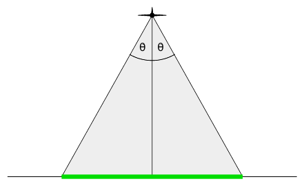
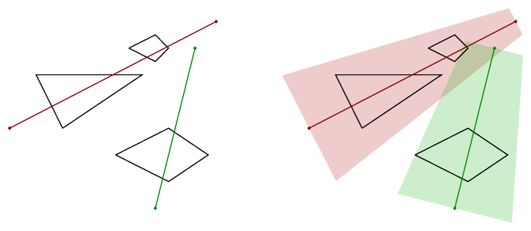

ICPC World Finals 2021 · Problem F
You might never have heard of the island group of Iceepeecee, but that suits their inhabitants just fine. Located in a remote part of the South Pacific, they are truly off the beaten track, without any regular air or sea traffic, and they have remained a tropical paradise with unspoiled local fauna and flora.
Being off the map is great when you don’t want to be overrun by hordes of tourists, but not so ideal when you actually do need a map for some reason. One such reason came up recently: Iceepeecee’s central government needs an exact map of the islands to apportion government funds. Even tropical paradises need money, so Iceepeecee needs a map!
The easiest way to create a map would be an aerial survey. After dismissing chartering planes as too expensive, building an air balloon as too dangerous, and fitting carrier pigeons with cameras as too cruel to animals, they had a brilliant idea. Even with its remote location, there are still plenty of commercial airplanes crossing the skies above Iceepeecee. What if one mounted cameras on flights that are already scheduled to fly anyway? That would be a cheap solution to the problem!
Iceepeecee’s plan is to install line-scan cameras on the planes. These cameras point straight downwards and collect images one line segment at a time, orthogonal to the flight path. The photographed line segment will be determined by the altitude that the plane is flying at, and the camera’s aperture angle θ (see Figure F.1). Greater angles θ mean that the camera can see more, but also that the camera is more expensive.
Moreover, Iceepeecee wants to make sure that each island is observed in its entirety by at least one flight. That means it is not sufficient that an island is only partially photographed by multiple flights, even if the combination of the photographs covers the whole island.
Flight paths follow straight line segments in three-dimensional space, that is, (x1, y1, z1) − (x2, y2, z2) (see Figure F.2), where the z-coordinates give the altitude of the plane. Photographs are taken only along these line segments.
Given the location of their islands and flights, Iceepeecee wants to find the smallest aperture angle θ that allows for a successful survey. Can you help?


The input describes a set of islands and flight paths. It starts with a line containing two integers n and m, the number n of islands, and the number m of flight paths, respectively (1 ≤ n, m ≤ 100). This is followed by descriptions of the n islands. Each island description starts with a line containing a single integer ni, the number of vertices of the polygon describing the ith island (3 ≤ ni ≤ 100). It is followed by ni lines, each containing two integers xij, yij (|xij|, |yij| ≤ 106), specifying the vertices for the ith island in counterclockwise order. Each island’s polygon is simple, that is, its vertices are distinct and no two edges of the polygon intersect or touch, other than consecutive edges which touch at their common vertex. Different islands do not intersect or touch.
The input concludes with another m lines, each describing a flight path. Each such line contains six integers x1, y1, z1, x2, y2, z2 (|xi|, |yi|, |zi| ≤ 106, zi > 0 and (x1, y1) ≠ (x2, y2)). They specify that a flight takes place from (x1, y1, z1) to (x2, y2, z2).
Output the smallest angle θ (in degrees) that allows for a complete survey of the islands with the given flights. The answer should be exact to an absolute or relative error of 10−6. If there is no such angle, then output impossible. The input is chosen such that if the coordinates of the island vertices are changed by at most ±10−8, then the answer will not change more than the allowed rounding error.
3 2 3 20 30 50 50 10 50 4 40 20 60 10 75 20 60 30 4 45 60 55 55 60 60 55 65 0 30 20 78 70 5 55 0 20 70 60 10
48.031693036
1 1 4 0 0 10 0 10 10 0 10 5 5 10 15 5 10
impossible